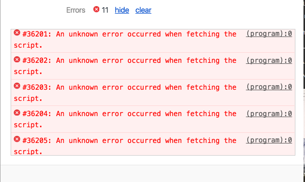

Service Workers for everyone❗
About Me
Head Instructor & Development Lead at HackerYou
@Rchristiani on Twitter
ryanchristiani.com
letslearnes6.com
NodeSchoolTO Organizer
The Problem
💨🚃🚃🚃🚃 🌳 🌳 🏡
Offline notes for students.
More importantly, offline content.
Appcache
We have been able to cache connect before with AppCache.
However AppCache is in the process of being removed from the browser, and service workers are taking over.
With Service workers, get the programmatic ability to cache what you want, how you want.
Service Workers
A service worker sits between your site and the network.
📂 ⇢ 📦 ï¸â‡¢ ☁️
Legend
- 📂 Our Page
- 📦 Service Worker
- ☁️ The Network
Create Offline experiences
This is one component of the Progressive Web App idea.
Progressive Web Apps
- Fast performance
- Instant content loading
- Push Notifications
- Add to home screen
I heard Google was
really into them.
Web Workers
Service Workers are just one type of Worker. Web Workers in the browser allow us to run code in a separate worker thread.
A new thread
JavaScript is a single threaded language, meaning it does one thing at a time. But like, pretty fast! However sometimes we need to do more than one thing at a time.
Demo Site
https://rchristiani.github.io/ttc-service-workers/Sorry iOS 9, I used a bunch of arrow functions...and fetch
Register a worker
if('serviceWorker' in navigator) {
navigator.serviceWorker.register('./sw.js')
.then(reg => {
console.log('Service Worker Registered')
})
.catch(err => {
console.log(`Error registering worker ${err}`);
})
}
Application tab to work with service workers.
Scope
Inside of service works we have a different environment work with. There is no DOM access available to you.
We can post messages however between our worker and the page.
Life Cycle
When a service worker is registered there is a lifecycle it goes there, and there are a series of events that are triggered.
- Install
- Active
Install
The install event is a good place start your cache. Caching your static assets can be done here.
self.addEventListener('install', function(e) {
caches.open('union-times')
.then((cache) => {
});
});
CacheStorage
Available to us in both the worker and the window is CacheStorage, or caches. This is used to actual open and fill our cache.
caches.open('union-times')
.then((cache) => {
});
Using the .open() method we provide a name for our cache, it then returns a Promise that we can use to get access to the new cache.
With this new cache object we can use the addAll method to cache our static assets.
return cache.addAll([
'',
'js/script.js',
'js/templater.js',
'css/style.css'
]);
NOTE You have to make sure your paths are correct, otherwise your cache will fail to fetch the resource!
So here we have cached our assets, we can see this if we go to the application panel again, and checkout the cache section.
However we need to now tell the service worker to work as our intermediary, enter the fetch event.
⇣ ⇠⇡ ï¸
📂 ⇢ 📦 ️❌ ☁️
Fetch
self.addEventListener('fetch', function(e) {
});
Just like other events in the browser, the fetch event is passed an event object.
In the fetch event we can use the resonpdeWith method to decide how we want to get our data, from the cache or the network.
self.addEventListener('fetch', function(e) {
e.respondeWith(
);
});
e.respondeWith(
caches.open('union-times')
.then(function(cache) {
})
);
Using the request we can check it see if that request is in our cache.
return caches.match(e.request)
.then(function(res) {
return res;
});
});
If it is, we can return it.
How about caching the content that is new, when the network it up.
return caches.match(e.request)
.then(function(res) {
return res || fetch(e.request).then(res => {
e.request.url
.match('chrome-extension://') ?
'' :
cache.put(e.request, res.clone());
return res;
});
});
⇣ ⇠⇡ ï¸
📂 ⇢ 📦 ⇢ ☁️
⇡ ⇠⇣ ï¸
Works Great!
One Small Problem
With the current setup, it will just be getting from the cache at this point. Not great for frequently updated content....
Network and then cache
self.addEventListener('fetch', function(e) {
e.respondWith(
fetch(e.request)
.then((response) => networkThenCache(response,e))
.catch(() => pullFromCache(e))
);
});
function networkThenCache(response,e) {
return caches.open(cacheVersion)
.then(function(cache) {
return caches.match(e.request)
.then(function(res) {
e.request.url.match('chrome-extension://') ?
'' :
cache.put(e.request, response.clone());
return response;
});
});
}
function pullFromCache(e) {
return caches.open(cacheVersion)
.then(function(cache) {
return caches.match(e.request)
.then(function(res) {
return res;
});
});
}
🶠Woof that is a lot of code...
promises all the way down...
⇣ ⇠⇡ ï¸
📂 📦 ⇠â˜ï¸âœ”ï¸
⇣ ⇢ ⇢ ⇡ ï¸
⇣ ⇠⇡ ï¸
📂 ⇢ 📦 ️❌ ☁️
Now when the user is online, we get fresh info, if the user is offline we get cached info.
Cleaning up the cache
Over time we might want add to our cache, or update how our service worker works.
Enter the activate event.
Activate is fired after the worker has been installed. Once the page loads, the activate event can be used to run any code we want.
First, lets change the hard coded union-times name we have been using, and store that in a variable,
const cacheVersion = 'union-times-v2';
self.addEventListener('activate', function(e) {
e.waitUntil(
);
});
Get all the caches avaible
self.addEventListener('activate', function(e) {
e.waitUntil(
caches.keys().then((cacheNames) => {
})
);
});
Delete the caches.
self.addEventListener('activate', function(e) {
e.waitUntil(
caches.keys().then((cacheNames) => {
return Promise.all(
cacheNames.filter(() => true)
.map((cache) => caches.delete(cache))
);
})
;
});
Dev Tools
Debugging your worker is something you will do a lot of when you start working on it.
The Application tab is your new friend.
Errors but where?
A small source of frustration. But it can only get better.
Browser support

sw-toolbox
toolbox.precache([
'',
'js/script.js',
'js/templater.js',
'css/style.css'
]);
No need for all the
Resources
- https://jakearchibald.com/2014/offline-cookbook
- https://jakearchibald.github.io/isserviceworkerready/
- https://nolanlawson.github.io/html5workertest/